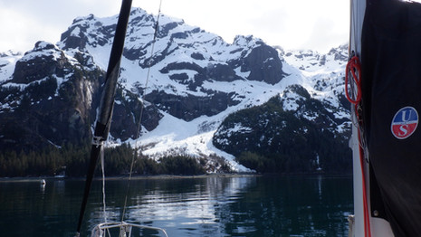
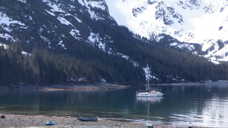

Custom Adventures
Build a private trip around wildlife, photography, fishing, hiking, sailing or simply getting away.
Learn more
Private sailing adventures aboard Siren, a Corsair 33 trimaran.
View Charters Request a QuoteLeave the crowded routes behind. Sail among mountain-lined channels, quiet anchorages, glaciers, forests and remote shores in the company of an experienced skipper.
Build a private trip around wildlife, photography, fishing, hiking, sailing or simply getting away.
Learn more
Siren is a Corsair 33 trimaran built for exploring. Her shallow draft, speed and stable platform make her particularly well suited to moving through the protected waters and remote anchorages of Southeast Alaska.
Trips are private and can be tailored around sailing, exploring, photography, wildlife, fishing or simply finding a quiet place to spend the night.
Meet Siren
Tell us when you will be in Southeast Alaska, how long you have, and what you want to experience. We will work with you to create a private sailing adventure.
Request a Quote